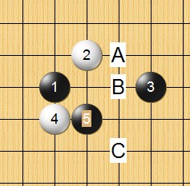

大恒星列传（妖刀九传之八）
#1 <font color="Fuchsia">大恒星列传（妖刀九传之八）</font>作者：失落刀 发表时间：2008-11-15 16:05:06
这个4有一种对称的美感。5B=？
［本站用户 竹子 于 2009-3-2 22:57:11 花5个金币送您鲜花一朵］
［ 掌棋宣传员 于 2010-8-4 15:11:30 时花20金币送鲜花一朵］
#2 Re:大恒星列传作者：冷面孤煞 发表时间：2008-11-15 20:01:19
=======上图对应的爱五子棋谱代码如下，以便你拆解：========
h8i9k8j11
======================================================嘿嘿
#3 Re:大恒星列传作者：失落刀 发表时间：2008-11-15 20:21:48
2楼的4很弱啊。#4 Re:大恒星列传作者：袜子破个洞 发表时间：2008-11-15 21:29:12
一楼的。5走二上面呢。我没细看。感觉不错的。
#5 Re:大恒星列传作者：失落刀 发表时间：2008-11-15 22:29:08
两个6不会杀。
#6 Re:大恒星列传（妖刀九传之八）作者：失落刀 发表时间：2008-11-22 22:52:24

5B=？
#7 Re:大恒星列传（妖刀九传之八）作者：失落刀 发表时间：2008-11-30 12:53:17
7有可能胜吗？若有的话，7走哪里？
#8 Re:大恒星列传（妖刀九传之八）作者：失落刀 发表时间：2008-11-30 13:48:07
求解1.
#9 Re:大恒星列传（妖刀九传之八）作者：失落刀 发表时间：2008-11-30 13:49:13
求解2.
#10 Re:大恒星列传（妖刀九传之八）作者：失落刀 发表时间：2008-11-30 13:49:48
求解3.
#11 Re:大恒星列传（妖刀九传之八）作者：失落刀 发表时间：2008-11-30 13:50:20
求解4.
#12 Re:大恒星列传（妖刀九传之八）作者：木月 发表时间：2008-12-1 21:34:15
继续学习，感谢教友们……#13 Re:大恒星列传（妖刀九传之八）作者：浪人痴痴 发表时间：2008-12-1 21:39:12
同意楼上的观点!~#14 Re:大恒星列传（妖刀九传之八）作者：失落刀 发表时间：2008-12-4 17:06:51
正确的两打点，黑胜。
#15 Re:大恒星列传（妖刀九传之八）作者：失落刀 发表时间：2008-12-4 17:23:11
正确的两打点，黑胜。
#16 Re:大恒星列传（妖刀九传之八）作者：失落刀 发表时间：2008-12-4 17:29:46
一片没有结论的4.
#17 Re:大恒星列传（妖刀九传之八）作者：26 发表时间：2008-12-5 20:02:52

正确的两打点，黑胜。
#18 Re:大恒星列传（妖刀九传之八）作者：失落刀 发表时间：2009-1-2 22:48:33
求黑胜。
#19 Re:大恒星列传（妖刀九传之八）作者：失落刀 发表时间：2009-1-2 22:49:14
求黑胜。
#20 Re:大恒星列传（妖刀九传之八）作者：失落刀 发表时间：2009-1-2 22:51:17

求黑胜。
#21 Re:大恒星列传（妖刀九传之八）作者：失落刀 发表时间：2009-1-2 22:53:38
求黑胜。
#22 Re:Re:大恒星列传（妖刀九传之八）作者：nara 发表时间：2009-1-3 0:21:13
这个七就可以必胜了！
#23 Re:大恒星列传（妖刀九传之八）作者：失落刀 发表时间：2009-1-3 12:49:54
这个不会。
#24 Re:Re:大恒星列传（妖刀九传之八）作者：nara 发表时间：2009-1-3 13:04:15
换个思路,这个9就可以地毯了!
［ 失落刀 于 2009-1-3 13:25:07 时奖励此帖[金币加 20 威望加1］
#25 Re:大恒星列传（妖刀九传之八）作者：陨落之城 发表时间：2009-5-20 21:06:06
=======上图对应的爱五子棋谱代码如下，以便你拆解：========
h8i9k8i6i10i8j9h11i7j6k6l7k9k10j8h6m9
======================================================
［ 失落刀 于 2009-5-24 10:28:34 时花20金币送鲜花一朵］
#26 Re:大恒星列传（妖刀九传之八）作者：日月丽天 发表时间：2010-2-2 13:44:41
=======上图对应的爱五子棋谱代码如下，以便你拆解：========
h8i9k8h9
======================================================
请问大恒星这个4，结论如何？黑5，有那些选点？
#27 Re:大恒星列传（妖刀九传之八）作者：失落刀 发表时间：2010-6-20 18:48:32
日月·丽天制作
#28 Re:Re:大恒星列传（妖刀九传之八）作者：日月丽天 发表时间：2010-6-20 19:15:31
引用：
原文由 失落刀 发表于 2008-11-30 13:49:48 :求解3.
#29 Re:Re:大恒星列传（妖刀九传之八）作者：日月丽天 发表时间：2010-6-20 19:16:23
引用：
原文由 失落刀 发表于 2008-11-30 13:49:48 :求解3.

通大恒星这个4的2打，黑棋5手必胜
#30 Re:大恒星列传（妖刀九传之八）作者：家族粉丝 发表时间：2010-6-27 17:31:22
#31 Re:大恒星列传（妖刀九传之八）作者：好学 发表时间：2010-7-28 19:31:36
=======上图对应的爱五子棋谱代码如下，以便你拆解：========
h8i9h11g10
======================================================
两打是？
#32 Re:大恒星列传（妖刀九传之八）作者：小点心 发表时间：2010-8-2 16:05:04
=======上图对应的爱五子棋谱代码如下，以便你拆解：========
h8i9k8i6
======================================================
两打是？
#33 Re:大恒星列传（妖刀九传之八）作者：左伟光 发表时间：2010-8-15 12:09:25
未做到最终杀点，请大家帮我看看。
=======上图对应的爱五子棋谱代码如下，以便你拆解：========
h8i9k8i10j7h9
======================================================
 111.rar
111.rar#34 Re:大恒星列传（妖刀九传之八）作者：冥王哈迪斯 发表时间：2010-12-24 13:58:12
~ 问题多多啊，，教主大人=======上图对应的爱五子棋谱代码如下，以便你拆解：========
h8i9k8g8j7h9i10j9g9i7
======================================================
=======上图对应的爱五子棋谱代码如下，以便你拆解：========
h8i9k8g8j7h9j9i10j11j10a1k10
====================================================== 请问 您的这个5 如何必胜的？小弟功力有限，，请赐教
#35 Re:大恒星列传（妖刀九传之八）作者：陈唯一 发表时间：2010-12-24 18:21:48
=======上图对应的爱五子棋谱代码如下，以便你拆解：========
h8i9k8g8j7h9j9i10j11k10i6
======================================================通
=======上图对应的爱五子棋谱代码如下，以便你拆解：========
h8g8i6i9j7h9j9i10j11k10k8
======================================================
#36 Re:Re:大恒星列传（妖刀九传之八）作者：冥王哈迪斯 发表时间：2010-12-27 20:22:23
引用：三的对角A 怎么必胜的？
原文由 失落刀 发表于 2008-12-4 17:06:51 :正确的两打点，黑胜。
#37 Re:大恒星列传（妖刀九传之八）作者：失落刀 发表时间：2011-4-4 13:51:24
=======上图对应的爱五子棋谱代码如下，以便你拆解：========
h8i9k8g8k10
======================================================
换个5，简单胜。
#38 Re:大恒星列传（妖刀九传之八）作者：日月丽天 发表时间：2011-12-27 10:23:54
第3打5
［ 失落刀 于 2011-12-30 19:34:12 时奖励此帖[金币加 100 威望加1］
#39 Re:大恒星列传（妖刀九传之八）作者：失落刀 发表时间：2011-12-30 19:47:04
5B在哪里？
#40 Re:大恒星列传（妖刀九传之八）作者：日月丽天 发表时间：2011-12-31 19:52:18
［ 失落刀 于 2011-12-31 21:26:07 时奖励此帖[金币加 100 威望加1］
#41 Re:Re:大恒星列传（妖刀九传之八）作者：空恨社小仙 发表时间：2012-1-9 22:08:40